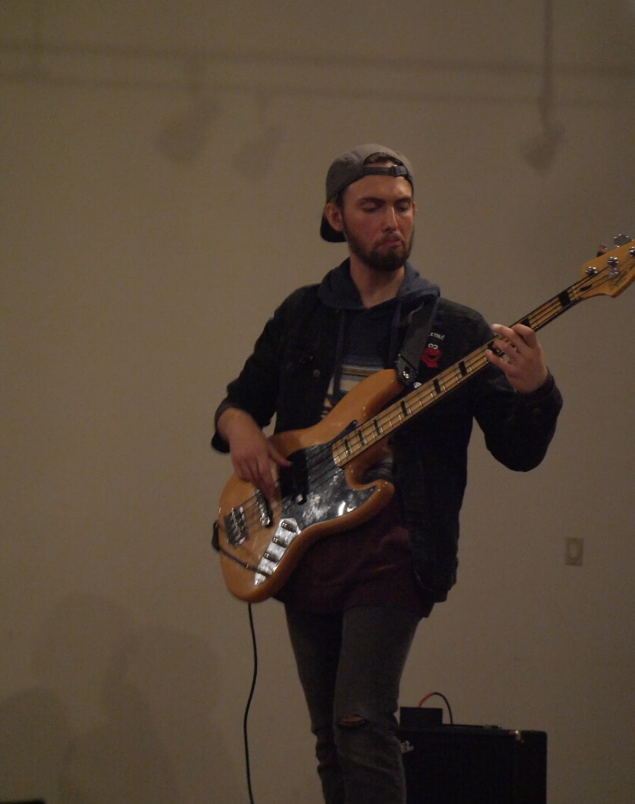

Gallery

Cooper Davis is a composer, producer, and multi-instrumentalist. He is completing his undergraduate degree in Media Scoring and Production at the University of Miami-Frost School of Music with minors in Composition and Music Business. He works in a variety of styles and genres from his solo electronic project Spuzzy to his funk and R&B band Puddley. His production skills range from recording and mixing to mastering music in a variety of softwares and environments. He has composed and produced for independent artists, video game developers, film projects, and full bands.
Cooper Davis started his musical journey at the age of five when he began taking piano lessons. He soon discovered that his musical ambitions were in composition. At age 11, he began studying composition with Luke Marantz at Mark Murphy Music in South Orange, NJ. There he learned the basics of music theory, understanding music through the medium of a piano as a conduit for his creativity. At age 14, Cooper got his first laptop which sparked his passion for music production and recording music. He spent his high school years (and the long days of the COVID pandemic) developing his craft using Logic Pro and producing as much as he could through, eventually swapping to Ableton as his primary DAW.
During those years, he had two internships which greatly improved his understanding of music technology, one at Three Wave Music, a synthesizer repair shop where he learned basic circuitry and increased his understanding of sound design and electronic instrumentation. The second was at Sound on Sound Studios, a professional recording studio in Montclair, NJ, where he learned recording and mixing techniques, client relations, and much more.
Cooper Davis was awarded a full scholarship to the University of Miami-Frost School of Music in 2022. There he majors in Media Scoring and Production, surrounding himself with knowledgeable professors and talented musicians and developing his skills and repertoire. He has performed with multiple bands and ensembles, both on campus and off. In his current band, Puddley, Cooper plays bass and works on arrangements, recording, mixing, and mastering all the band’s original songs. He also was the head mixing engineer for the Ready Steady Ship soundtrack, recording all the live players as well as doing mixing and mastering. Cooper has had a long and extensive career, especially for someone so young.
See his full resume here. Cooper’s ready to take on any new project that comes his way.